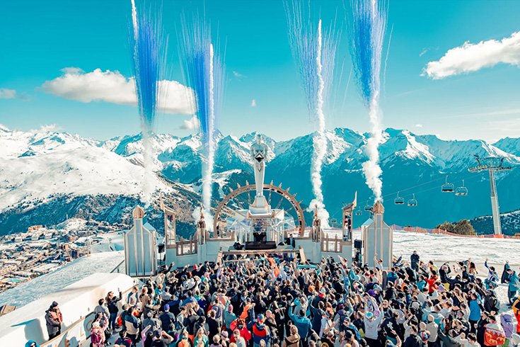

WHITE FESTIVAL 2024
White festival es el mayor festival de música y nieve en España,con artistas nacionales e Internacionales de primer nivel.
2 días de esquí y de festival que convierten White Festival en una experiencia que convoca a los amantes de la música y deportes,en una localización tan espectacular y única como una estación de esquí.
En la impresionante estación de esquí en la Cerdanya, concretamente en la Masella (Das, Gerona).
Programadas para tener lugar y hora, el 23 y 24 de diciembre de 2023 de 17:00 de la tarde a las 00:00 de la noche.